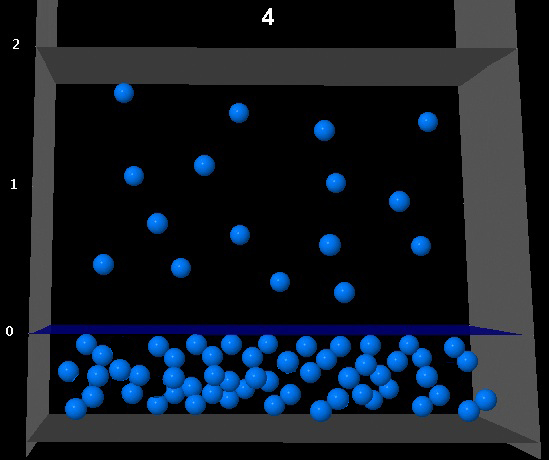

Equilibrio 1


La siguiente figura muestra la situación de equlibrio líquido-vapor para un determinado compuesto a una determinada temperatura.
Si se amplia el volumen de la fase vapor al doble del inicial cuál de las siguientes figuras representa mejor la situación del sistema una vez reestablecido el equilibrio a la misma temperatura?
|  |
No es correcto. La cámara ha aumentado al doble pero
el número de moléculas en la fase vapor no.
|
|
No es correcto. Ha aumentado el volumen de la fase vapor
y el número de moléculas es el mismo. Eso supone una presión de vapor la mitad que en la muestra.
|
|
No es correcto. La cámara ha aumentado al doble pero
el número de moléculas en la fase vapor ha aumentado mas de doble.
|
|
Correcto. Esta figura representa un estado de equilibrio. La cámara
de vapor es doble que en la muestra y el número de moléculas en la fase vapor tambien.
|